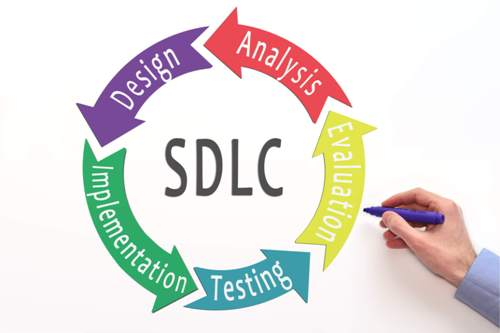
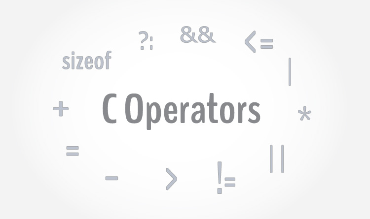
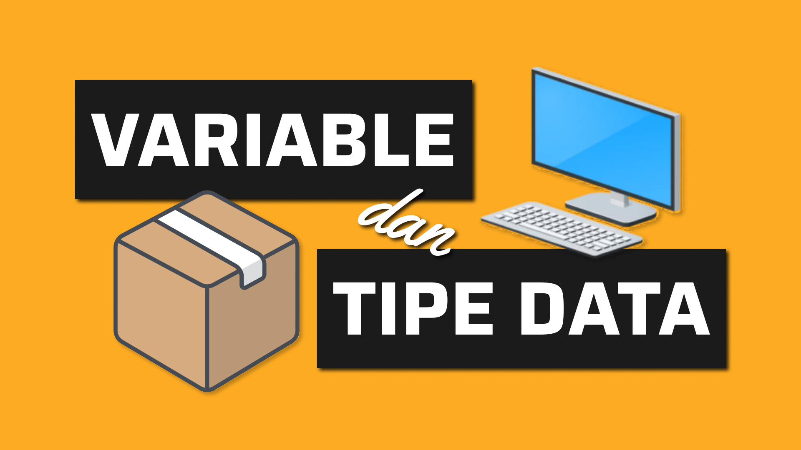
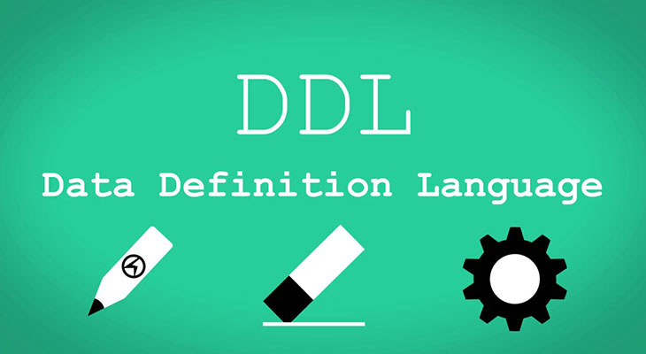

About Me
Hi, saya adalah siswi SMK KRIAN 1 yang berdomisili di Sidoarjo. Saat ini sedang belajar HTML di Petani kode.
Disini saya akan menunjukan beberapa hasil pekerjaan yang saya pelajari selama menjadi siswa SMK KRIAN 1
Saya ingin Menambah banyak Pengalaman diusia muda. Ini dia hasil pekerjaan saya.
| Cover | Tugas | Keterangan |
|---|---|---|
|  | SDLC | Sdlc adalah proses yang hemat biaya dan hemat waktu yang digunakan oleh tim pengembangan untuk mendesain serta membangun perangkat lunak berkualitas tinggi. |
|  | Operator | Operator adalah memberikan tugas kepada sebuah variabel, memanipulasi variabel tersebut dengan variable lain, ataupun membandingkan antar variabel. |
| Algoritma | langkah- langkah yang ditulis secara berurutan untuk menyelesaikan masalah pemrograman komputer. | |
|  | Tipe data dan Variabel | Variabel adalah sebuah simbol yang digunakan untuk menyimpan nilai. Sedangkan tipe data adalah jenis nilai yang akan kita simpan. |
 |
Basis data | Apakah yang dimaksud dengan basis data? Database adalah koleksi data yang sistematis dan sistematis yang disimpan secara elektronik. Ini dapat berisi semua jenis data, termasuk kata, angka, gambar, video, dan file. Anda dapat menggunakan perangkat lunak yang disebut sistem manajemen database (DBMS) untuk menyimpan, mengambil, dan mengedit data. |
|  | DDL | sekumpulan set perintah yang bertujuan untuk mendefinisikan atribut – atribut database, tabel, atribut kolom (field), maupun batasan – batasan terhadap suatu atribut dan relasi/hubungan antar tabel. |